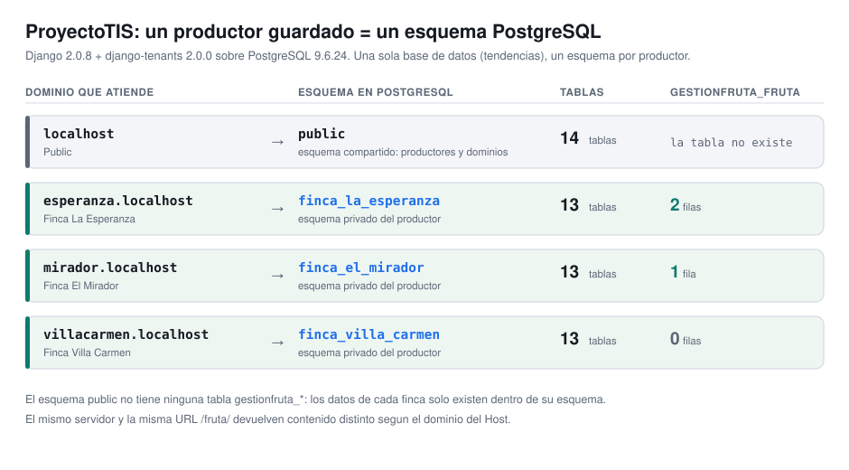
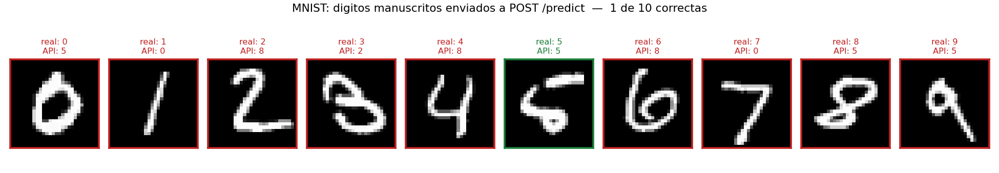
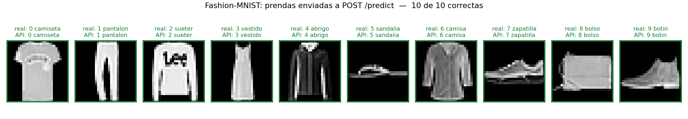
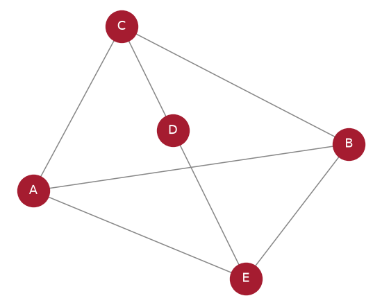
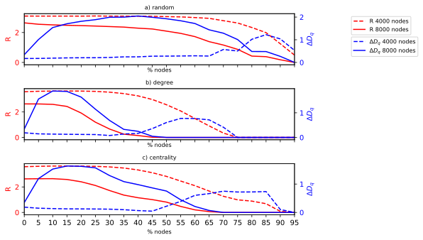
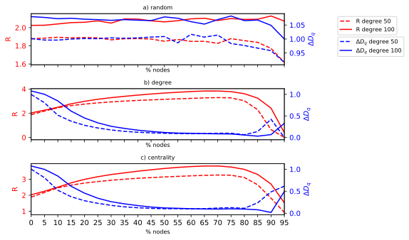
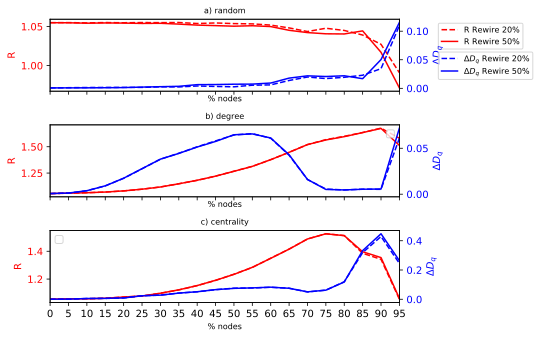
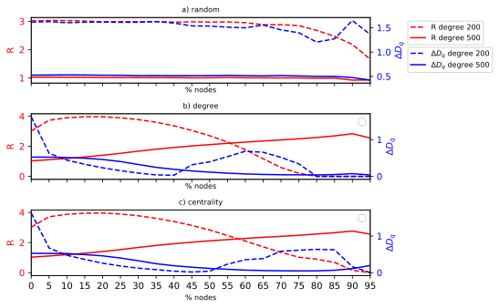
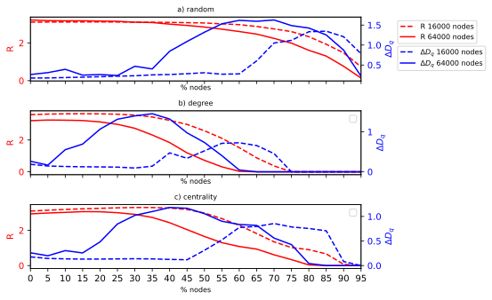
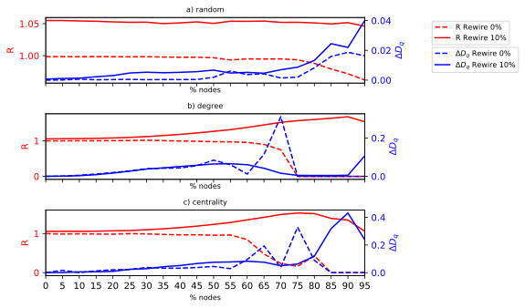

Prisionero evolutivo C++
Ver repo →Algoritmo genético que evoluciona estrategias (autómatas de estados) para el dilema del prisionero iterado.
$ qmake && make && ./PrisioneroEvolutivo 500 30 50
Evidencia de evolución tras 500 generaciones: la ganancia promedio pasa de 3 156 a ≈152 millones y la del mejor de 4 378 a ≈2 132 millones. Abajo, la población inicial, la final y la máquina de estados del jugador ganador.
¿Desea cambiar los valores específicos de la aplicación?[Y/N] ¿Desea cambiar los valores de la matriz de pesos??[Y/N] -------------------------------------------------------------------- ---------------------- Población Inicial ----------------------- -------------------------------------------------------------------- La ganancia promedio es: 3156.93 La ganancia del mejor es: 4378 Tabla de estados del mejor jugador: +--------------------------------+ | Tabla de Estados | +--------------------------------+ | EP S PEC PET | | | | 1 T 2 3 | | 2 T 4 3 | | 3 T 3 2 | | 4 T 1 1 | +--------------------------------+ -------------------------------------------------------------------- ---------------------- Población Final ------------------------- -------------------------------------------------------------------- La ganancia promedio es: 1.52514e+08 La ganancia del mejor es: 2132821224 Tabla de estados del mejor jugador: +--------------------------------+ | Tabla de Estados | +--------------------------------+ | EP S PEC PET | | | | 1 C 14 35 | | 2 C 2 29 | | 3 C 4 34 | | 4 T 19 2 | | 5 C 18 7 | | 6 C 8 12 | | 7 T 35 36 | | 8 T 28 19 | | 9 T 9 6 | | 10 C 35 35 | | 11 T 27 29 | | 12 C 33 26 | | 13 C 25 23 | | 14 T 36 35 | | 15 T 31 15 | | 16 T 2 25 | | 17 T 15 7 | | 18 T 31 11 | | 19 T 34 10 | | 20 C 23 25 | | 21 C 21 28 | | 22 C 6 13 | | 23 C 10 7 | | 24 T 16 35 | | 25 C 19 30 | | 26 C 25 36 | | 27 C 36 20 | | 28 C 32 26 | | 29 C 24 15 | | 30 C 28 26 | | 31 T 30 17 | | 32 C 28 27 | | 33 T 10 6 | | 34 C 3 18 | | 35 T 24 5 | | 36 C 8 9 | +--------------------------------+
ProyectoTIS Python · Django
Ver repo →Aplicación web multi-tenant de gestión de fruta: django-tenants le da a cada productor su propio esquema dentro de una sola base de datos PostgreSQL.
$ python manage.py migrate_schemas --shared · python manage.py runserver localhost:8080
Levantado sin Docker sobre las versiones que pide el Readme: PostgreSQL 9.6.24 y Python 3.6.15 compilado desde fuente. Guardar un Productor con esquema propio dispara 16 migraciones y crea su esquema; el tenant public reutiliza el que ya existe. Tres fincas dejan cuatro esquemas, public con 14 tablas y uno privado por finca con 13 cada uno. El aislamiento se ve al final: public.gestionfruta_fruta no existe, y la misma URL /fruta/ devuelve 2 filas en esperanza.localhost, 1 en mirador.localhost y ninguna en villacarmen.localhost; un dominio sin registrar responde 404.
ProyectoTIS - gestion de fruta multi-tenant
Django 2.0.8 + django-tenants 2.0.0 + PostgreSQL 9.6.24 + Python 3.6.15
Corrida completa sin Docker: cluster PostgreSQL propio en el puerto 5432 e
interprete Python 3.6.15 compilado desde fuente. Todo lo que sigue es la
salida literal de esa corrida.
========================================================================
1. Versiones realmente instaladas
========================================================================
$ psql -U tendencias -d tendencias -c "SELECT version();"
version
-----------------------------------------------------------------------------------------------------------
PostgreSQL 9.6.24 on x86_64-pc-linux-gnu, compiled by gcc (GCC) 4.4.7 20120313 (Red Hat 4.4.7-23), 64-bit
(1 row)
$ python -c "import django, psycopg2, sys; ..."
Python 3.6.15
Django 2.0.8
django-tenants 2.0.0
psycopg2 2.7.4
Pillow 4.0.0
django-bootstrap3 9.1.0
========================================================================
2. makemigrations + migrate_schemas --shared (esquema publico)
========================================================================
$ python manage.py makemigrations
No changes detected
$ python manage.py migrate_schemas --shared
=== Starting migration
Operations to perform:
Apply all migrations: admin, auth, contenttypes, gestionfruta, productortenant, sessions
Running migrations:
… (recortado: 16 migraciones, todas OK)
========================================================================
3. Un Productor guardado = un esquema PostgreSQL creado
========================================================================
$ python manage.py shell < script de creacion de tenants
(cada bloque de migracion pertenece al tenant que se nombra justo despues;
el tenant 'public' no dispara migracion porque su esquema ya existe)
tenant creado: schema=public dominio=localhost productor=Public
=== Starting migration
[16 migraciones "Applying ... OK"; elididas aqui]
tenant creado: schema=finca_la_esperanza dominio=esperanza.localhost productor=Finca La Esperanza
=== Starting migration
[16 migraciones "Applying ... OK", identicas a las del primer esquema; elididas aqui]
tenant creado: schema=finca_el_mirador dominio=mirador.localhost productor=Finca El Mirador
=== Starting migration
[16 migraciones "Applying ... OK", identicas a las del primer esquema; elididas aqui]
tenant creado: schema=finca_villa_carmen dominio=villacarmen.localhost productor=Finca Villa Carmen
productores en el esquema publico:
id=1 schema=public Public
id=2 schema=finca_la_esperanza Finca La Esperanza
id=3 schema=finca_el_mirador Finca El Mirador
id=4 schema=finca_villa_carmen Finca Villa Carmen
========================================================================
4. La prueba: un esquema por productor
========================================================================
$ psql -U tendencias -d tendencias -c "\dn"
List of schemas
Name | Owner
--------------------+------------
finca_el_mirador | tendencias
finca_la_esperanza | tendencias
finca_villa_carmen | tendencias
public | tendencias
(4 rows)
$ psql ... -c "SELECT nspname ... FROM pg_namespace ..."
esquema | tablas
--------------------+--------
finca_el_mirador | 13
finca_la_esperanza | 13
finca_villa_carmen | 13
public | 14
(4 rows)
========================================================================
7. Las mismas filas vistas por SQL, esquema por esquema
========================================================================
$ psql ... SELECT * FROM finca_la_esperanza.gestionfruta_fruta
id | nombre | variedad | produccionmes | msnm
----+--------+----------+---------------+------
1 | Lulo | La Selva | 1800 | 1450
2 | Mora | Castilla | 900 | 1450
(2 rows)
$ psql ... SELECT * FROM finca_el_mirador.gestionfruta_fruta
id | nombre | variedad | produccionmes | msnm
----+------------+------------+---------------+------
1 | Granadilla | Colombiana | 2400 | 1520
(1 row)
$ psql ... SELECT count(*) FROM finca_villa_carmen.gestionfruta_fruta (tenant sin datos)
filas
-------
0
(1 row)
$ psql ... SELECT count(*) FROM public.gestionfruta_fruta (esa tabla no existe en public)
ERROR: relation "public.gestionfruta_fruta" does not exist
LINE 1: SELECT count(*) AS filas FROM public.gestionfruta_fruta;
^
========================================================================
9. Mismo servidor, misma URL, datos distintos por dominio
========================================================================
$ curl -s -o /dev/null -w "%{http_code}" http://esperanza.localhost:8080/fruta/
200
$ curl -s http://esperanza.localhost:8080/fruta/ | sed -n "/<tbody>/,/<\/tbody>/p"
<tbody>
<tr>
<td>Lulo</td>
<td>La Selva</td>
<td>2.5 ha</td>
<td>1800</td>
<td>Ladera</td>
<td>1450</td>
<td>19</td>
<td>departamento</td>
<td>municipio</td>
</tr>
<tr>
<td>Mora</td>
<td>Castilla</td>
<td>1.2 ha</td>
<td>900</td>
<td>Ladera</td>
<td>1450</td>
<td>19</td>
<td>departamento</td>
<td>municipio</td>
</tr>
</tbody>
$ curl -s -o /dev/null -w "%{http_code}" http://mirador.localhost:8080/fruta/
200
$ curl -s http://mirador.localhost:8080/fruta/ | sed -n "/<tbody>/,/<\/tbody>/p"
<tbody>
<tr>
<td>Granadilla</td>
<td>Colombiana</td>
<td>3.0 ha</td>
<td>2400</td>
<td>Plano</td>
<td>1520</td>
<td>21</td>
<td>departamento</td>
<td>municipio</td>
</tr>
</tbody>
$ curl -s -o /dev/null -w "%{http_code}" http://villacarmen.localhost:8080/fruta/ (tenant sin datos)
200
$ curl -s http://villacarmen.localhost:8080/fruta/ | grep -A2 "Lista de frutas"
<h3>Lista de frutas</h3>
<p>Nos encontramos construyendo nuestro sitio, lamentamos las molestias</p>
$ curl -s -o /dev/null -w "%{http_code}" http://desconocida.localhost:8080/ (dominio no registrado)
404
Redes neuronales desplegables Python · Flask · Keras
Ver repo →API REST en Flask que sirve el modelo Keras versionado en el repositorio: se envía una imagen por POST /predict y responde con la clase y el vector de probabilidades.
$ python -m flask run --host=0.0.0.0 · curl -s -F imagen=@digito_0.png http://localhost:5000/predict
Reproducido sin Docker: CPython 3.11.15 y las 70 dependencias de requirements.txt instaladas sin tocar una sola versión, TensorFlow 2.15.0 y Keras 2.15.0 entre ellas. El servicio arranca con el mismo comando de entrypoint.sh y responde: los tres endpoints devuelven 200 y la inferencia toma 144 ms la primera vez y 20 ms la siguiente. Lo interesante es qué predice. Con dígitos de MNIST acierta 1 de 10 por HTTP y 0,1511 sobre las 10 000 imágenes de prueba. No es el preprocesado: las cuatro convenciones de entrada dan 0,1511, 0,1484, 0,1726 y 0,1614. Tampoco son pesos sin entrenar: la confianza media de la clase ganadora es 0,8832, o sea que se equivoca convencida. El mismo SavedModel alcanza 0,8982 sobre Fashion-MNIST y acierta 10 de 10 prendas por HTTP. El modelo que viaja en el repositorio es el clasificador de prendas de la electiva, no el de dígitos que anuncia el código que lo rodea.
$ python -m flask run --host=0.0.0.0 # el mismo comando de entrypoint.sh
… (recortado: dos avisos de scikit-learn al cargar el pickle)
* Serving Flask app 'app'
* Debug mode: off
WARNING: This is a development server. Do not use it in a production deployment. Use a production WSGI server instead.
* Running on all addresses (0.0.0.0)
* Running on http://127.0.0.1:5000
* Running on http://10.2.0.2:5000
Press CTRL+C to quit
127.0.0.1 - - [30/Jul/2026 12:08:41] "GET / HTTP/1.1" 200 -
127.0.0.1 - - [30/Jul/2026 12:08:41] "GET / HTTP/1.1" 200 -
127.0.0.1 - - [30/Jul/2026 12:08:41] "GET /leer?dato=hola HTTP/1.1" 200 -
1/1 [==============================] - 0s 144ms/step
127.0.0.1 - - [30/Jul/2026 12:08:41] "POST /predict HTTP/1.1" 200 -
1/1 [==============================] - 0s 20ms/step
127.0.0.1 - - [30/Jul/2026 12:08:41] "POST /predict HTTP/1.1" 200 -
==========================================================================
$ python paso02_modelo.py # imprime las versiones del stack y model.summary()
TensorFlow 2.15.0
Keras 2.15.0
Model: "sequential"
_________________________________________________________________
Layer (type) Output Shape Param #
=================================================================
conv2d (Conv2D) (None, 26, 26, 64) 640
max_pooling2d (MaxPooling2 (None, 13, 13, 64) 0
D)
conv2d_1 (Conv2D) (None, 11, 11, 32) 18464
max_pooling2d_1 (MaxPoolin (None, 5, 5, 32) 0
g2D)
flatten (Flatten) (None, 800) 0
dense (Dense) (None, 10) 8010
=================================================================
Total params: 27114 (105.91 KB)
Trainable params: 27114 (105.91 KB)
Non-trainable params: 0 (0.00 Byte)
_________________________________________________________________
==========================================================================
$ curl -s http://localhost:5000/
{"message": "Bienvenido a la API de Redes Neuronales"}
$ curl -s "http://localhost:5000/leer?dato=hola"
{"message": "Dato recibido: hola"}
==========================================================================
# Diez digitos del conjunto de test de MNIST
$ curl -s -F imagen=@digito_0.png http://localhost:5000/predict # digito real: 0
{"result": "El n\u00famero es: 5", "total": "El total de predicciones es [[1.41213868e-05 1.37641744e-14 7.89169285e-10 3.63472689e-11\n 2.16094218e-03 9.97824907e-01 3.23503513e-09 8.55478188e-12\n 2.41778775e-08 1.53012087e-12]] "}
$ curl -s -F imagen=@digito_1.png http://localhost:5000/predict # digito real: 1
{"result": "El n\u00famero es: 0", "total": "El total de predicciones es [[4.0870675e-01 8.8976026e-02 1.4995579e-03 2.1943126e-03 9.6680701e-02\n 3.3366994e-03 5.5556256e-06 1.3668460e-05 7.9510457e-05 3.9850724e-01]] "}
$ curl -s -F imagen=@digito_2.png http://localhost:5000/predict # digito real: 2
{"result": "El n\u00famero es: 8", "total": "El total de predicciones es [[1.22349913e-04 1.05494925e-10 1.89144375e-05 3.04786772e-06\n 7.62481159e-06 1.75599574e-12 1.15734039e-07 1.62508479e-11\n 9.99847889e-01 1.08146434e-08]] "}
$ curl -s -F imagen=@digito_3.png http://localhost:5000/predict # digito real: 3
{"result": "El n\u00famero es: 2", "total": "El total de predicciones es [[3.3818073e-05 1.0081890e-14 9.2372704e-01 2.4968566e-04 6.3022092e-02\n 1.7654691e-14 8.6935819e-05 3.2893507e-08 1.2880431e-02 5.1741836e-12]] "}
… (recortado)
$ curl -s -F imagen=@digito_5.png http://localhost:5000/predict # digito real: 5
{"result": "El n\u00famero es: 5", "total": "El total de predicciones es [[2.6645497e-05 9.5238468e-16 2.2767463e-09 2.6422873e-08 1.3232000e-13\n 9.9997318e-01 1.5997811e-09 7.7078774e-17 9.2130477e-08 6.6678926e-16]] "}
… (recortado)
==========================================================================
# Diez prendas del conjunto de test de Fashion-MNIST
$ curl -s -F imagen=@prenda_0.png http://localhost:5000/predict # clase real: 0 (camiseta)
{"result": "El n\u00famero es: 0", "total": "El total de predicciones es [[9.9990034e-01 1.2889904e-09 2.1758035e-05 1.4325147e-08 2.8774390e-09\n 3.1899248e-19 7.7845209e-05 2.1449894e-13 7.3075664e-11 5.4892323e-12]] "}
$ curl -s -F imagen=@prenda_1.png http://localhost:5000/predict # clase real: 1 (pantalon)
{"result": "El n\u00famero es: 1", "total": "El total de predicciones es [[1.1354324e-16 1.0000000e+00 1.4661995e-18 2.1030018e-16 3.6825573e-16\n 1.0282651e-17 7.4845128e-16 2.7729126e-21 9.7241246e-20 1.1471601e-18]] "}
$ curl -s -F imagen=@prenda_2.png http://localhost:5000/predict # clase real: 2 (sueter)
{"result": "El n\u00famero es: 2", "total": "El total de predicciones es [[2.7511135e-07 3.5593286e-15 9.9999869e-01 8.2090907e-08 5.7047384e-08\n 2.1462300e-22 8.1425230e-07 2.7814775e-15 2.8235892e-14 8.2924234e-14]] "}
… (recortado)
$ curl -s -F imagen=@prenda_6.png http://localhost:5000/predict # clase real: 6 (camisa)
{"result": "El n\u00famero es: 6", "total": "El total de predicciones es [[1.2810595e-01 1.5339972e-09 3.3676715e-03 1.5880947e-04 4.1809212e-02\n 5.8082988e-10 8.2655829e-01 1.3207883e-08 1.7044143e-09 1.6535987e-09]] "}
… (recortado)
==========================================================================
# Diagnostico: por que la API acierta las prendas y falla los digitos
# Cada cifra sale de evaluar el SavedModel del repositorio sobre los
# 10 000 ejemplos del conjunto de test correspondiente.
$ python paso06_diagnostico.py # cuatro convenciones de entrada, sobre MNIST
x/255 (blanco sobre negro, [0,1]) = lo que produce la API exactitud 0.1511
x (blanco sobre negro, [0,255]) exactitud 0.1484
1 - x/255 (negro sobre blanco, [0,1]) exactitud 0.1726
255 - x (negro sobre blanco, [0,255]) exactitud 0.1614
# Ninguna normalizacion salva el resultado: no es un problema de preprocesado.
# Los pesos tampoco son aleatorios y la red responde con mucha seguridad:
# confianza media del maximo sobre MNIST: 0.8832
$ python paso08_fashion.py # el mismo modelo, contra Fashion-MNIST
Fashion-MNIST, conjunto de test
imagenes evaluadas: 10000
aciertos: 8982
exactitud: 0.8982
exactitud por clase:
0 camiseta 0.8560
1 pantalon 0.9760
2 sueter 0.8540
3 vestido 0.8890
4 abrigo 0.8870
5 sandalia 0.9640
6 camisa 0.6560
7 zapatilla 0.9780
8 bolso 0.9700
9 botin 0.9520

Gestión del espectro C++
Ver repo →Componente de algoritmo genético del trabajo de grado: asignación del espectro radioeléctrico.
$ g++ -O2 genetico/genetico.cpp -o gen && ./gen -i genetico/input -t 2 …
Converge a una asignación factible: violations = 0, costo total 462. El programa emite un XML con la solución (canal por canal por operador); se muestra el encabezado.
<?xml version="1.0" encoding="UTF-8"?> <solutions authorXML="Carlos Andrés Delgado Saavedra" > <head solution="noOptima"> <geograficAssignationType>0</geograficAssignationType> <geograficAssignationID>0</geograficAssignationID> <frequencyBand>1</frequencyBand> <frequencyRank>1</frequencyRank> <channelsNumber>12</channelsNumber> <operatorsNumber>5</operatorsNumber> <channelSeparation>1</channelSeparation> <numberOperatorPerChannel>1</numberOperatorPerChannel> <considerTop>true</considerTop> <staticAssignation>true</staticAssignation> <considerSeparation>true</considerSeparation> <numSolutions>3</numSolutions> <executionTime>2.000005</executionTime> </head> <solution id="0"> <costs> <violations>0</violations> <blocksNumber>7</blocksNumber> <difChannelNumberMaxBlockFree>1</difChannelNumberMaxBlockFree> <channelNumberUseless>6</channelNumberUseless> <totalCost>462</totalCost> </costs> <report> <operator name="2"> <channels> <channel ID="0"> 1 </channel> <channel ID="1"> 0 </channel> <channel ID="2"> 0 </channel> <channel ID="3"> 0 </channel> <channel ID="4"> 0 </channel> <channel ID="5"> 0 </channel> <channel ID="6"> 0 </channel> <channel ID="7"> 0 </channel> <channel ID="8"> 0 </channel> <channel ID="9"> 0 </channel> <channel ID="10"> 0 </channel> <channel ID="11"> 0 </channel> … (recortado)
Fundamentos de Lenguajes de Programación Racket
Ver repo →Intérpretes al estilo EOPL. Se evalúan expresiones reales del mini-lenguaje con el intérprete.
$ racket Interpretador….rkt (expresiones por stdin)
Condicional → 100, aplicación de procedimiento (7·7) → 49, y factorial recursivo (fact 5) → 120. Resultados reales evaluados por el intérprete.
; Intérprete del mini-lenguaje (EOPL, Racket) — evaluación real
> si opera > [5,3] entonces 100 sino 200
100
> local f = proc (n) opera * [n,n] en (f 7)
49
> localrec fact(n) = si opera > [n,1]
entonces opera * [n,(fact opera - [n,1])]
sino 1
en (fact 5)
120
FADA — Análisis y diseño de algoritmos Python
Ver repo →Ejemplos ejecutables del curso: sumatorias, complejidad e InsertionSort.
$ python3 Sumatoria.py · 1-InsertionSort.py · Recurrencias/Ejemplo1.py
El conteo empírico de operaciones de InsertionSort coincide con las cotas mejor/peor caso; la suma empírica coincide con la fórmula cerrada.
### $ python3 Sumatoria.py 2025394308 2025394308 ### $ python3 1-InsertionSort.py [0, 1, 2, 3, 7, 8, 9, 12] Tamaño 100 Mejor caso 496 496 Peor caso 15346 15346.0 Caso promedio 7968.64 7771.5 ***************************** Tamaño 200 Mejor caso 996 996 Peor caso 60696 60696.0 Caso promedio 30850.23 30546.5 ***************************** Tamaño 300 Mejor caso 1496 1496 Peor caso 136046 136046.0 Caso promedio 68839.7 68321.5 ***************************** Tamaño 500 Mejor caso 2496 2496 Peor caso 376746 376746.0 Caso promedio 188559.84 188871.5 ***************************** Tamaño 800 Mejor caso 3996 3996 Peor caso 962796 962796.0 Caso promedio 484197.69 482196.5 ***************************** ### $ python3 Ejemplo1.py cte= 1 n= 1 val: 1 1.0 cte= 1 n= 4 val: 7 7.0 cte= 1 n= 16 val: 37.0 37.0 cte= 1 n= 64 val: 175.0 175.0 cte= 1 n= 256 val: 781.0 781.0 cte= 1 n= 1024 val: 3367.0 3367.0 cte= 1 n= 4096 val: 14197.0 14197.0 cte= 1 n= 16384 val: 58975.0 58975.0 … (recortado)
Matemáticas Discretas II Python
Ver repo →Número cromático, planaridad y dibujo de grafos con networkx/numpy.
$ python3 CromaticoCicloComplemento.py · PlanoRueda.py (MPLBACKEND=Agg)
Número cromático de ciclos y su complemento (columna final True = coincide con lo esperado), y un grafo renderizado con networkx:
### $ python3 CromaticoCicloComplemento.py 3 1 1 True 4 2 2 True 5 3 3 True 6 3 3 True 7 4 4 True 8 4 4 True 9 5 5 True 10 5 5 True 11 6 6 True 12 6 6 True 13 7 7 True 14 7 7 True 15 8 8 True 16 8 8 True 17 9 9 True 18 9 9 True 19 10 10 True 20 10 10 True 21 11 11 True 22 11 11 True 23 12 12 True 24 12 12 True 25 13 13 True 26 13 13 True 27 14 14 True … (recortado)

LAMFRIA — multifractalidad en redes Python
Ver repo →Figuras científicas del proyecto: R-index frente al diferencial multifractal ΔD_q bajo ataques por azar, por grado y por centralidad.
$ bash output/combinedgraphics/script.sh (matplotlib)
Las seis figuras del artículo, regeneradas desde los datos versionados en el repositorio (redes scale-free, small-world y aleatorias):





